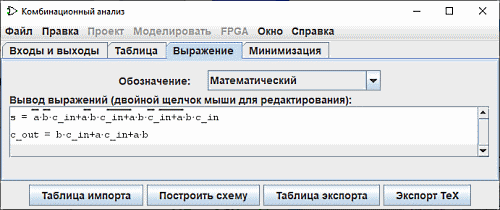
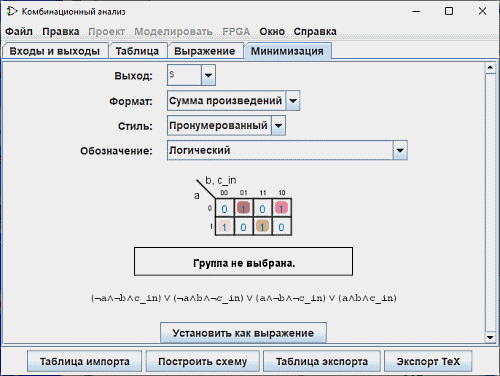

Создание выражений
Для каждой выходной переменной окно Комбинационный анализ поддерживает две структуры - соответствующую колонку таблицы истинности и логическое выражение - указывающее, как каждый выход связан со своими входами. Вы можете редактировать и таблицу истинности и выражение; одно будет автоматически менять другое по мере необходимости, чтобы они соответствовали друг другу.
Как мы увидим на следующей странице, логические выражения особенно полезны, потому что окно Комбинационный анализ будет использовать их, когда мы укажем ему построить схему, соответствующую текущему состоянию.
Вы можете просматривать и редактировать выражения, используя две последние вкладки: Выражение и Минимизация.
Вкладка Выражение

Вкладка Выражение позволяет вам просматривать и редактировать текущее выражение, связанное с каждой выходной переменной. Он имеет селектор Обозначение : и список математических выражений схемы.
Селектор Обозначение : изменяет режим нотации выходных выражений. Это позволяет использовать пять типов нотации:
- Математический :
- Бар выше представляет собой отрицание ,∙ функцию AND и функцию + ИЛИ. xx2295; функция Исключающее ИЛИ.
- Логический :
- ¬ представляет собой отрицание, ∧ функцию AND и ∨ функцию OR. xx22bb; функция Исключающее ИЛИ.
- Альтернативная логика :
- ~ представляет собой отрицание, ∧ функцию AND и ∨ функцию OR. функция ≢ функция Исключающее ИЛИ.
- Программирование с помощью Boolean's :
- Функция ! представляет собой отрицание, функцию AND и || функцию OR. != функцию Исключающее ИЛИ.
- Программирование битами :
- ~ представляет отрицание, & представляет функцию AND, а | - функцию OR. ^ функция или эксклюзивный
Текстовое поле ниже отображает ту же информацию в виде ASCII последовательности. Здесь НЕ представляется как тильда ('~').
Чуть ниже селектора выражения отображаются в списке. Вы можете отредактировать выражение в текстовой панели, дважды щелкнув мышью на строке выражения.
Обратите внимание, что ваша таблица правды будет безвозвратно изменена, если вы отредактируете выражения и наоборот.
В дополнение к умножению и сложению, обозначающим И и ИЛИ, выражение, которое вы набираете, может содержать любой из логических операторов C/Java, а также просто английские слова сами по себе.
| высший приоритет | ~ ! ' | НЕ |
|---|---|---|
| (отсутствие символа) & && AND | И | |
| ^ ⊕ | Исключающее ИЛИ | |
| низший приоритет | + | || OR | ИЛИ |
Все нижеприведённые примеры - допустимые представления одного и того же выражения. Кроме того, можно смешивать операторы.
| a' (b + c) |
| !a && (b || c) |
| NOT a AND (b OR c) |
Вообще-то, скобки в последовательностях AND'ов (или OR'ов или XOR'ов) не имеют значения. (В частности, когда Logisim создаёт соответствующую схему, он будет игнорировать такие скобки.)
Вкладка Минимизация

Последняя вкладка отображает минимизированное выражение, соответствующее столбцу таблицы истинности. На этой панели представлены четыре селектора, таблица карнаута и минимальное выражение.

|
| Пронумерованный |

|
| Подкладка |
селектор Обозначение: имеет то же самое свойство, что и панель Expression (смотри выше).
то ниже списка появится карта Карно, соответствующая выходной переменной. Вы можете щёлкать на карте Карно для изменения соответствующих значений таблицы истинности. Карта Карно будет также показывать выбранные в данный момент для минимизированного выражения термы в виде сплошных полупрозрачных скругленных прямоугольников.
Ниже - само минимизированное выражение, отформатированное так же, как во вкладке Выражение. Logisim использует метод Куайна — Мак-Класки для вычисления минимизированного выражения. Он эквивалентен карте Карно, но применим к любому числу входных переменных.
Кнопка Установить как выражение позволяет вам выбрать минимизированное выражение как выражение, соответствующее переменной. Это, как правило, не нужно, поскольку изменения в таблице истинности приводят к использованию минимизированного выражения для изменённого столбца; но если вы введете выражение через вкладку Выражение, то это может быть удобно, чтобы перейти к соответствующему минимизированному выражению.
Далее: Создание схемы.